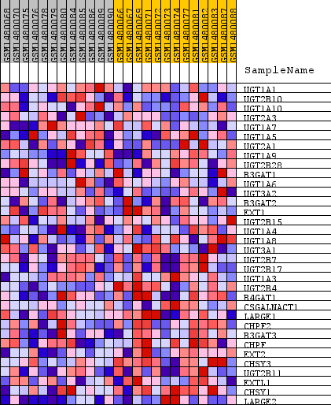
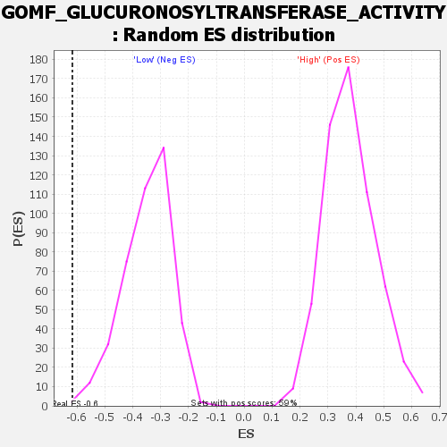

Profile of the Running ES Score & Positions of GeneSet Members on the Rank Ordered List
| Dataset | WG6v3.CYGB.cls#High_versus_Low.CYGB.cls#High_versus_Low_repos |
| Phenotype | CYGB.cls#High_versus_Low_repos |
| Upregulated in class | Low |
| GeneSet | GOMF_GLUCURONOSYLTRANSFERASE_ACTIVITY |
| Enrichment Score (ES) | -0.61673373 |
| Normalized Enrichment Score (NES) | -1.7669258 |
| Nominal p-value | 0.004842615 |
| FDR q-value | 0.15140744 |
| FWER p-Value | 0.946 |
| SYMBOL | TITLE | RANK IN GENE LIST | RANK METRIC SCORE | RUNNING ES | CORE ENRICHMENT | |
|---|---|---|---|---|---|---|
| 1 | UGT1A1 | UGT1A1 | 4952 | 0.015 | -0.2391 | No |
| 2 | UGT2B10 | UGT2B10 | 5655 | 0.011 | -0.2637 | No |
| 3 | UGT1A10 | UGT1A10 | 7176 | 0.005 | -0.3373 | No |
| 4 | UGT2A3 | UGT2A3 | 7365 | 0.004 | -0.3429 | No |
| 5 | UGT1A7 | UGT1A7 | 8024 | 0.002 | -0.3751 | No |
| 6 | UGT1A5 | UGT1A5 | 8212 | 0.001 | -0.3837 | No |
| 7 | UGT2A1 | UGT2A1 | 8249 | 0.001 | -0.3846 | No |
| 8 | UGT1A9 | UGT1A9 | 8414 | 0.000 | -0.3927 | No |
| 9 | UGT2B28 | UGT2B28 | 8573 | -0.000 | -0.4007 | No |
| 10 | B3GAT1 | B3GAT1 | 8693 | -0.000 | -0.4064 | No |
| 11 | UGT1A6 | UGT1A6 | 8790 | -0.001 | -0.4105 | No |
| 12 | UGT3A2 | UGT3A2 | 9162 | -0.002 | -0.4275 | No |
| 13 | B3GAT2 | B3GAT2 | 9291 | -0.002 | -0.4316 | No |
| 14 | EXT1 | EXT1 | 9353 | -0.003 | -0.4320 | No |
| 15 | UGT2B15 | UGT2B15 | 9830 | -0.004 | -0.4522 | No |
| 16 | UGT1A4 | UGT1A4 | 10855 | -0.008 | -0.4968 | No |
| 17 | UGT1A8 | UGT1A8 | 11236 | -0.009 | -0.5066 | No |
| 18 | UGT3A1 | UGT3A1 | 11377 | -0.010 | -0.5036 | No |
| 19 | UGT2B7 | UGT2B7 | 12856 | -0.016 | -0.5627 | No |
| 20 | UGT2B17 | UGT2B17 | 13129 | -0.018 | -0.5582 | No |
| 21 | UGT1A3 | UGT1A3 | 14264 | -0.025 | -0.5904 | Yes |
| 22 | UGT2B4 | UGT2B4 | 14460 | -0.026 | -0.5726 | Yes |
| 23 | B4GAT1 | B4GAT1 | 14518 | -0.027 | -0.5473 | Yes |
| 24 | CSGALNACT1 | CSGALNACT1 | 15115 | -0.032 | -0.5445 | Yes |
| 25 | LARGE1 | LARGE1 | 15120 | -0.032 | -0.5112 | Yes |
| 26 | CHPF2 | CHPF2 | 16728 | -0.049 | -0.5420 | Yes |
| 27 | B3GAT3 | B3GAT3 | 16963 | -0.052 | -0.4989 | Yes |
| 28 | CHPF | CHPF | 16979 | -0.053 | -0.4443 | Yes |
| 29 | EXT2 | EXT2 | 17596 | -0.064 | -0.4089 | Yes |
| 30 | CHSY3 | CHSY3 | 17713 | -0.067 | -0.3448 | Yes |
| 31 | UGT2B11 | UGT2B11 | 17791 | -0.068 | -0.2771 | Yes |
| 32 | EXTL1 | EXTL1 | 17994 | -0.074 | -0.2099 | Yes |
| 33 | CHSY1 | CHSY1 | 18140 | -0.078 | -0.1350 | Yes |
| 34 | LARGE2 | LARGE2 | 19281 | -0.191 | 0.0073 | Yes |

